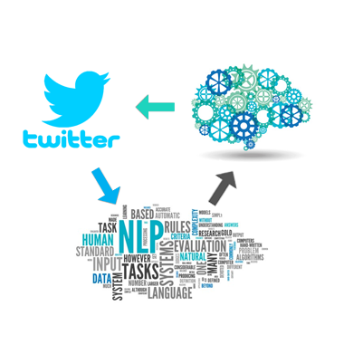

Below is a list of projects that showcase my Data Science skills. Some of the projects are excerpts from my Academic Research while others are more traditional Business Case Studies.
Although the subject matter may vary the fundamental skillset and process is the same:
Answering a question through the collection, cleaning, transformation, analysis, and visualization of data.

Predicting continous data is a staple of data science. In this project I take data on House Prices in California and use a variety of statistical techniques (linear regression, Random Forest, k-means clustering, etc.) in order to predict house prices.
I compare the efficacy of the models but also take care to explain assumptions behind the models, how to interpret their components, and my rational for the transformations I apply to the data.
Classifying data into discrete categories is the other twin pillar of data science. In this project I take data from the American National Election Services (ANES) and try to predict a respondent's vote choice.
I use a variety of different models (logistic regression, Support Vector Machine, Random Forest, etc.), compare the models, and identify the variables that are most likely to predict vote choice.
and compare the results.

Data can often be in the form of words rather than numbers or categories. In this project I scrape Tweets from Twitter, specifically Tweets that mention then-President Donald Trump. Using hand-labeled tweets, I use Naive Bayes Classifer and Sentiment analysis to examine the emotional affect towards Donald Trump.

Sometimes the data you need is not on a server or csv sheet. In this project I use Rvest to automate a form-filling process and scrape election data from a website.

It can be difficult to infer causation from observational data. Endogeneity, selection bias, and confounding variables can all complicate causal inference. A well run experiment can alleviate these concerns.
In this project I am interested in whether Partisanship (allegience to a political party) influences dating preferences.
I run an online experiment and analyze the results using ANOVAs.

Telling a 'story' with data through easy-to-understand visuals is an essential part of data science. I am proficient at visualizing data with Tableau ,
and R.